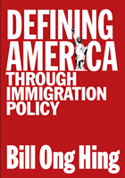

<body bgcolor="#FFFFFF" text="#000000" link="#0000FF" vlink="#CC0000" alink="#CC0000"><center><hr width="350" size="1" align="center" noshade>From the American Revolution to the war in Iraq, the struggle to define who is&#151and can become&#151an American<hr width="350" size="1" align="center" noshade><p><a href="https://cdcshoppingcart.uchicago.edu/Cart/ChicagoBook.aspx?ISBN=9781592132324&&PRESS=temple" target="_top">Buy this book!</a> | <a href="https://cdcshoppingcart.uchicago.edu/Cart/Cart.aspx?PRESS=temple" target="_top">View Cart</a> | <a href="https://cdcshoppingcart.uchicago.edu/Cart/Cart.aspx?PRESS=temple" target="_top">Check Out</a></p><p></p></center><!--none//--><h1>Defining America Through Immigration Policy</h1>
<H2><!-- Foreword by Anthony D. Romero, Executive Director, American Civil Liberties Union (title pg only) --></H2>
<h3>Bill Ong Hing, foreword by Anthony D. Romero, Esq.</h3>
<P>cloth 1-59213-232-4 $71.50, Jan 04, <FONT COLOR=#990033>Out of Stock Unavailable</FONT>
<br>paper 1-59213-233-2 $42.95, Dec 03, <FONT COLOR=#990033>Available</FONT>
<BR> 336 pp
7x10
7&nbsp;tables 1&nbsp;map(s) 2&nbsp;figures 5&nbsp;halftones
</P><BLOCKQUOTE><I>"[Hing's] understanding of history, drawn from personal experience and
participation, is piercing and helps to put the recent hysteria in
perspective. In his book, he applies the lessons of his decades-long
research and experience to fundamental issues at a critical time in our
nation's history."</i>
<br>&#151from the Foreword by <b>Anthony D. Romero</b>, Executive Director, American Civil Liberties Union<i></I></BLOCKQUOTE>
<p>From the earliest days of nationhood, the United States has determined who might enter the country and who might be naturalized. In this sweeping review of US immigration policies, Bill Ong Hing points to the racial, ethnic, and social struggles over who should be welcomed into the community of citizens. He shows how shifting visions of America have shaped policies governing asylum, exclusion, amnesty, and border policing. Written for a broad audience, <i>Defining America Through Immigration Policy</i> sets the continuing debates about immigration in the context of what value we as a people have assigned to cultural pluralism in various eras.
<p>Hing examines the competing visions of America reflected in immigration debates over the last 225 years. For instance, he compares the rationales and regulations that limited immigration of southern and eastern Europeans to those that excluded Asians in the nineteenth century. He offers a detailed history of the policies and enforcement procedures put in place to limit migration from Mexico, and indicts current border control measures as immoral. He probes into little discussed issues such as the exclusion of gays and lesbians and the impact of political considerations on the availability of amnesty and asylum to various groups of migrants. Hing's spirited discussion and sophisticated analysis will appeal to readers in a wide spectrum of academic disciplines as well as those general readers interested in America's on-going attempts to make one of many.
<BR>&nbsp;<h2>Excerpt</h2><P>Excerpt available at <a href="http://www.temple.edu/tempress">www.temple.edu/tempress</a></p>
<BR>&nbsp;<h2>Reviews</h2>
<p><i>"</i>Defining America through Immigration Policy<i> is an excellent book that can be recommended enthusiastically. Bill Ong Hing is a leading scholar of immigration. This book is a landmark work. Hing is thorough, and covers everything from Benjamin Franklin's attacks on German immigrants to the nativism of the turn-of-the-century directed towards Asians, Southern and Eastern Europeans, Catholics and Jews to contemporary border enforcement, undocumented migration, deportation procedures, and internal migration. He conveys the breadth and depth of his research with ample documentation and presents progressive arguments that should influence policy-makers."</i>
<br>&#151<b>Frank H. Wu</b>, Professor of Law, Howard University, and author of <i>Yellow: Race in America Beyond Black and White</i>
<p><i>"Engagingly contemporary (with historical roots) and at the same time carefully detailed in its coverage, </i>Defining America through Immigration Policy<i> is on the forefront of immigration law and policy theorizing. Hing's structure is straightforward, and his framework for organizing the wide range of immigration law issues is effective. He tells a compelling and disturbing social/legal story that gives human faces to congressional acts, executive policies, and frontline enforcement. Hing's blended approach&#151;chronological, contextual, and specific&#151;provides a readily accessible way into what could otherwise be an information morass. This significant strength distinguishes </i>Defining America through Political Participation<i>."</i>
<br>&#151<b>Eric K. Yamamoto</b>, Professor of Law, University of Hawaii School of Law
<p><i>"[An] insightful, entertaining book [is] a must read for anyone interested in the field of US immigration and the defining of the American character."</i>
<br>&#151<b><i>Choice</i></b>
<p><i>"Professor Hing is the rare policy scholar who can provide extensive historical information while making it accessible, interesting and enjoyable for the reader. His new book provides the same type of thoughtful analyses.... Overall the book makes an important contribution to immigration history, ethnic studies and public policy. It provides one of the first comprehensive reviews of the tensions between wanted and unwanted immigrants from a policy perspective. It also provides insights into why we hold certain beliefs about immigrants and immigration policy."</i>
<br>&#151<b><i>Journal of Ethnic History</i></b>
<p><i>"This is a welcome, hard-headed palliative to certain narratives about US immigration history.... the value of this book lies more in the scope of erudition about US immigration history and his mastery of many facets of that vast, complex, and controversial history that has indeed defined America as claimed."</i>
<br>&#151<b><i>Ethnic and Racial Studies</i></b>
<p><i>"Read this book. It is the best survey of the history of U.S. immigration policy to be published in at least a half-century and perhaps ever.... </i>Defining America through Immigration Policy<i> is a dazzling book with a moral core. In the end it is a hopeful book as well."</i>
<br>&#151<b><i>Pacific Historical Review</i></b>
<p><i>"In a </i>tour de force<i> of detailed facts and legal citations, [Hing] wades through the complex legal measures that have guided immigration law and policy over more than two centuries, at each stage linking specific legal actions with dominant views of the 'ordinary American.'"</i>
<br>&#151<b><i>Law & Politics Book Review</i></b>
<p><i>"This book provides a provocative and timely analysis of how the evolution of U.S. immigration policy reflects an enduring struggle over who ought to be embraced into full membership in the social, economic, and political life of the nation.... Overall, Hing has succeeded in crafting a powerful account... It is an important contribution whose significance cuts across disciplinary lines."</i>
<br>&#151<b><i>The Journal of American History</i></b>
<p><i>"...extensively detailed..."</i>
<br>&#151<b><i>The Historian</i></b>
<p><i>"It adds to the literature on the history and the policies of immigration, immigration law, the field of American studies, as well as to the study of different ethnic groups.... Hing provides an outstanding comprehensive perspective of immigration policies since their enactment."</i>
<br>&#151;<b><i>Journal of Policy Practice</i></b>
<BR>&nbsp;<P><p>"<a href="http://www.findarticles.com/p/articles/mi_m0KAY/is_3_7/ai_n6178108" target="new">Between two Americas: In the post-Sept. 11 era, state and local governments are being forced to choose sides on the immigrant rights debate</a>" by Bill Ong Hing, <i>Colorlines Magazine: Race, Action, Culture</i>, Fall 2004.</P><BR>&nbsp;<br>
<h2>Contents</h2><P>
<p>Foreword
<br>Introduction
<p><b>Part I. Defining America</b>
<br>1. The Western European New World and The New Americans
<br>2. The Undesirable Asian
<br>3. "Translate This": The 1917 Literacy Law
<br>4. The Xenophobic 1920s
<p><b>Part II. Redefining America</b>
<br>5. The 1952 Act: Excluding Communists, Homosexuals, and Other Undesirables
<br>6. 1965 to 1990: From Discriminatory Quotas to Discriminatory Diversity Visas
<p><b>Part III. Defining Mexicans As Non-Americans</b>
<br>7. Politicizing the Southwest Border
<br>8. Patrolling the Border and Sweeping for Mexicans
<br>9. Irca: Penalizing Employers, as Amnesty Barely Survives
<br>10. The Dark Side of Modern-Day Enforcement: Operation Gatekeeper
<p><b>Part IV. Deporting and Barring Non-Americans</b>
<br>11. Removal
<br>12. The Politics of Asylum
<p>Epilogue: Two Americas
<br>Appendix
<br>Notes
<br>Index
</P><BR>&nbsp;<H2>About the Author(s)</H2>
<table><tr><td valign="top"><img src="/tempress/authors/1645_au1.gif" height="90" width="75"></td><td width="100%" valign="middle"><p><b>Bill Ong Hing</b> is Professor of Law and Asian American Studies at the University of California, Davis. His previous books include <i>To Be an American: Cultural Pluralism and the Rhetoric of Assimilation</i> and <i>Making and Remaking Asian America through Immigration Policy</i>.</P></td></tr></table>
<BR><H2>Subject Categories</H2>
<p><A HREF="/tempress/race.html" TARGET="_top">Race and Ethnicity</a>
<BR><A HREF="/tempress/history.html" TARGET="_top">History</a>
<BR><A HREF="/tempress/law.html" TARGET="_top">Law and Criminology</a>
</p>
<BR><h2 class="inpageheading">In the series</H2>
<P><I><a href="http://www.temple.edu/tempress/mapping.html" onMouseOver="window.status='Click for other books in this series!'; return true;" onMouseOut="window.status=''; return true;" target="_top">Mapping Racisms</a></i>, edited by Jo Carrillo, Darrell Y. Hamamoto, Rodolfo D. Torres, and E. Frances White.
</p><p>The books in <i>Mapping Racisms</i>, edited by Jo Carrillo, Darrell Y. Hamamoto, Rodolfo D. Torres, and E. Frances White, assess the changing nature and meaning of racialized social relations in the United States. Although many of the works in the series are expected to be cultural, socio-economic, and historical studies devoted to a single ethnic group, the editors are especially interested in manuscripts that explore comparisons among these groups and analyze contemporary expressions of racialized relations and identities in the context of demographic shifts, changing class formations, and new forms of global dislocation. The aim of the series is to publish books that are analytical and rigorous, but at the same time appealing to a general audience.</p>
<p align="center"><a href="https://cdcshoppingcart.uchicago.edu/Cart/ChicagoBook.aspx?ISBN=9781592132324&&PRESS=temple" target="_top">Buy this book!</a> | <a href="https://cdcshoppingcart.uchicago.edu/Cart/Cart.aspx?PRESS=temple" target="_top">View Cart</a> | <a href="https://cdcshoppingcart.uchicago.edu/Cart/Cart.aspx?PRESS=temple" target="_top">Check Out</a></p><p><font face="Arial" size="1"><a href="copyright.html" onMouseOver="window.status='Web Copyright Policy';return true;" onMouseOut="window.status=''" title="Web Copyright Policy">&copy;</a> 2015 <a href="http://www.temple.edu" target="new" onMouseOver="window.status='Link to Temple University home page';return true;" onMouseOut="window.status=''" title="Link to Temple University home page">Temple University</a>. All Rights Reserved. http://www.temple.edu/tempress/titles/1645_reg.html</font></p>